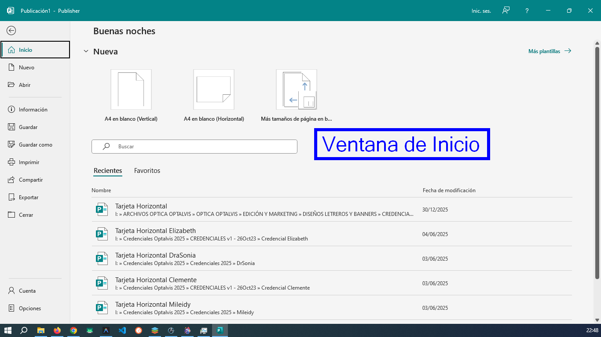
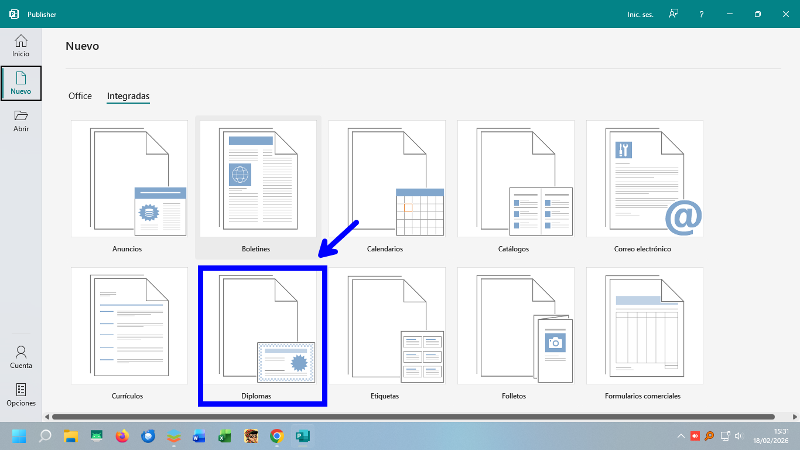
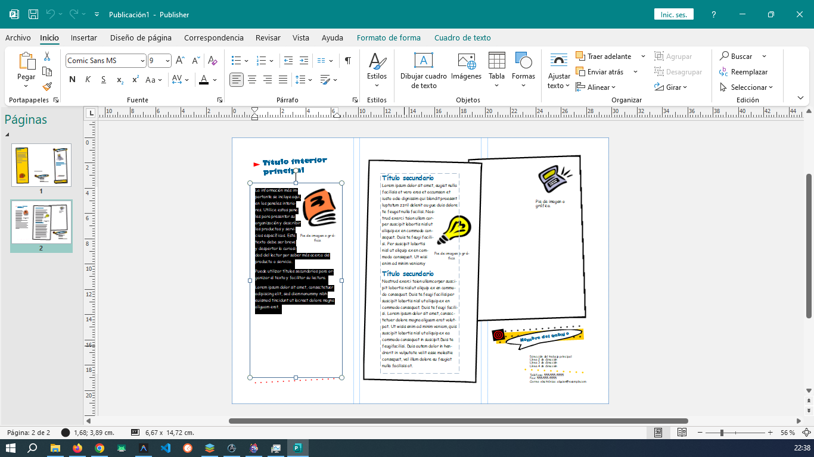
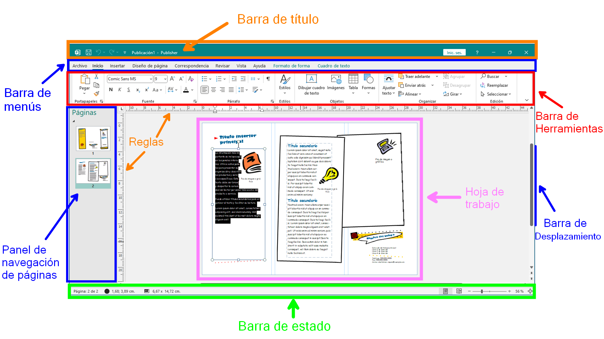
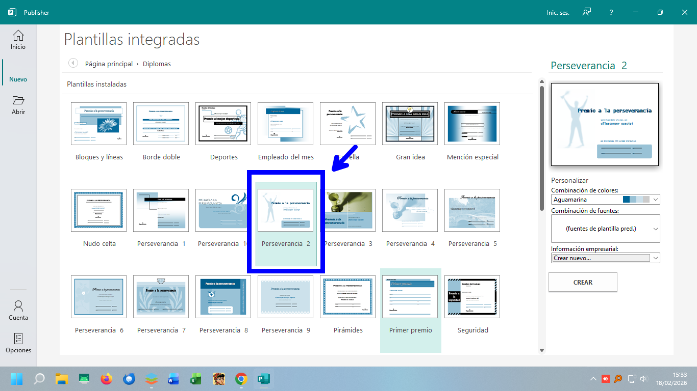
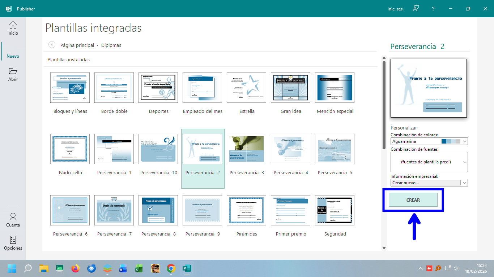
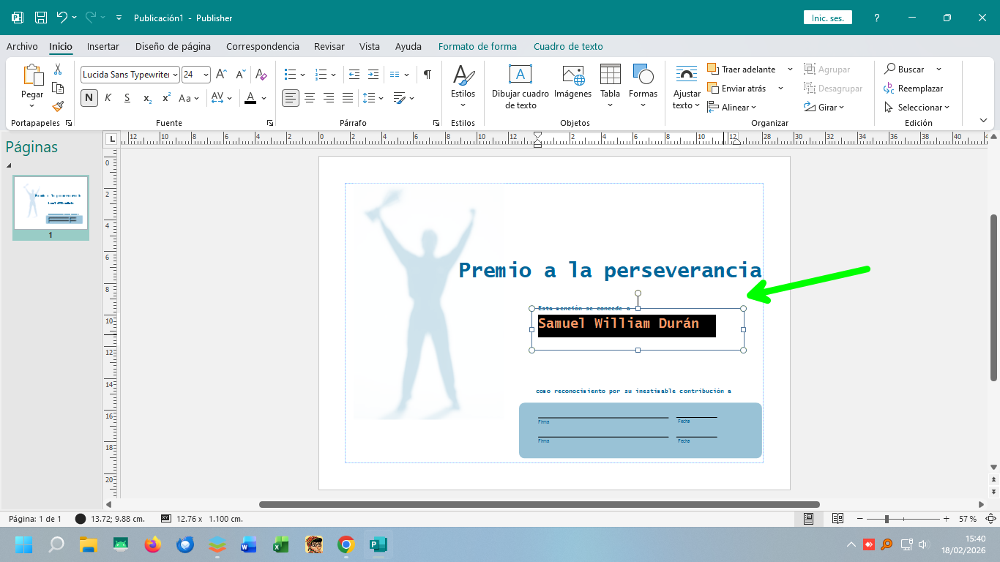
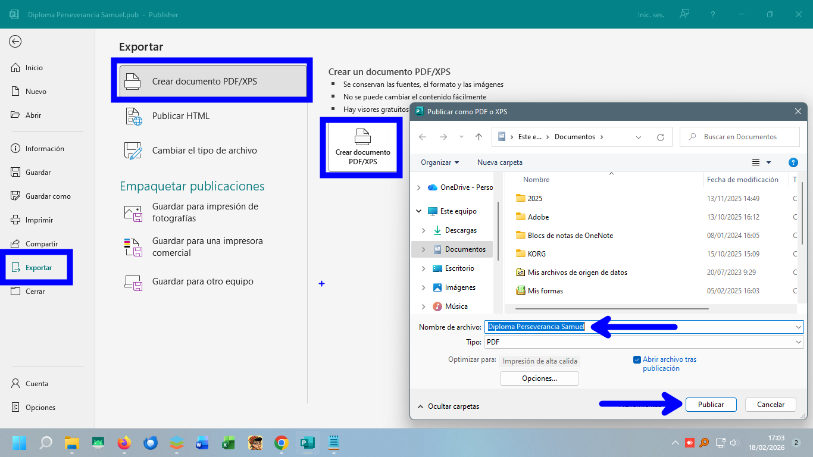

Introducción a Microsoft Publisher
Conceptos básicos, plantillas y creación de diplomas
¿Qué es Publisher?
Publisher es una aplicación de maquetación del paquete Microsoft Office que permite diseñar material publicitario de aspecto profesional de forma rápida.
Abrir Publisher
Para abrir la aplicación podemos dar clic en el botón Inicio y escribir "Publisher" o buscarlo en la lista de programas ordenados alfabéticamente.

Al iniciar la aplicación, veremos la Ventana de Inicio, donde podemos seleccionar entre crear una publicación en blanco o usar una plantilla:
Las Plantillas
Una de sus grandes ventajas es el uso de plantillas (diseños preelaborados) que facilitan la creación de documentos.
Entre las plantillas más comunes se encuentran:
- Tarjetas personales
- Invitaciones
- Calendarios
- Trípticos y Volantes
- Certificados y Diplomas
- Afiches y Hojas membretadas
El Entorno de Trabajo
Cuando hayamos creado un documento basado en Plantilla o en blanco veremos el entorno de trabajo:
Y es necesario que estemos familiarizados con las partes de esta ventana, que a continuación se muestra:
Práctica Guiada: Crear un Diploma
Para practicar el trabajo en este programa usaremos una plantilla integrada para elaborar un Diploma. Sigue estos pasos visuales:
1. Iniciar Publisher
Abre el programa desde el menú Inicio.
2. Seleccionar Plantillas Integradas
Ve a la pestaña "Nuevo" y selecciona "Integradas". Esto te mostrará las plantillas que ya vienen instaladas en tu equipo.

3. Elegir Categoría
Busca la carpeta "Diplomas" en la lista de categorías.
4. Seleccionar Diseño
Escoge el diseño que más te guste (Moderno, Clásico, etc.).
5. Personalizar Colores y Fuentes
Antes de crear, puedes cambiar la combinación de colores y tipografías desde el panel derecho.

6. Crear Publicación
Haz clic en el botón "Crear" para abrir el editor con tu plantilla.
7. Editar Contenido
Haz clic sobre los textos predeterminados para escribir los datos reales (Nombre, Motivo, Fecha).
8. Insertar Imágenes
Puedes personalizar aún más insertando imágenes externas o logotipos.


9. Cambiar Diseño (Opcional)
Si no te convence el resultado, puedes cambiar la plantilla sobre la marcha desde la pestaña "Diseño de página".


10. Guardar el Proyecto
Guarda tu archivo editable (.pub) para futuros cambios: Archivo > Guardar como.

11. Exportar a PDF
Para imprimir o enviar por WhatsApp o correo sin que se mueva el diseño, es mejor exportarlo como PDF.

Para exportarlo, clic en la pestaña Archivo
Luego Exportar. Elije Crear documento PDF/XPS y clic en el botón del mismo nombre.
Finalmente, elige la ubicación donde guardar el archivo y dale un nombre. y Luego clic en Publicar